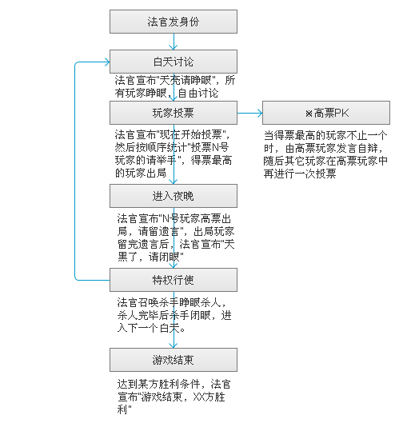

宁静的村庄遭到了狼人的袭击，每到夜晚，都会有无辜的村民惨死在狼人的利爪之下。为了挽救村庄，村民们要用自己的智慧找出那些伪装成村民、隐藏在他们当中的狼人。
游戏分为两大阵营：狼人方和村民方。有时会出现第三方“人狼情侣”。
狼人方：
狼人：每天夜里可以杀死一个人。
村民方：
村民：没有任何特殊功能。
先知：每晚可以确认一位玩家的真实身份。
女巫：有一瓶毒药和一瓶解药，解药可以让天黑被杀死的人复活，毒药可以在天黑时毒死一人。在整个游戏过程中每种药只能使用一次，同一个晚上不能同时使用2种药。
爱神：在游戏开始第一晚指定任意两个人（包括自己）建立情侣关系，如果情侣其中一人出局，另一个人也殉情出局。如果情侣中一个是村民，一个是狼人，他们被称作人狼情侣，成为独立第三方。必须消灭除他俩之外的所有游戏者才能获胜。
守护 ：每天晚上可以守护一位玩家（包括自己），被守护的玩家不会被狼杀死，但可以被女巫毒死。守护不能连续两天守护同一个人。
猎人：当他被狼人杀掉或者被投票出局后，他可以选择枪毙一个活着的人跟他一起死。
村长：村长有2条命。狼人要杀两次才能将村长杀死，但毒死、票死或猎人带走只需要一次。 如果这3种情况任一一种发生， 则所有身份失去技能。
白痴：平时与村民无异，但当他被票死的时候，他可以在别人发言时任意插嘴。
混血儿：混血儿可以在游戏第一晚选择支持某位玩家，当选择之后不可更改。混血儿不知道自己所支持玩家的身份。当支持的人所在的阵营胜利，混血也胜利，反之他就失败。
混血情侣补充：爱神连了混血与任何一位玩家（包括狼在内）为情侣，那么爱神和混血情侣都属于第三方。同时爱神和混血会收到第三方的提示。混血儿的情侣无论是好人还是狼人，都属于第三方，必须除掉除爱神外的所有好人和狼人。混血情侣获胜，除爱神之外的好人和狼人都输。如果混血和好人情侣，那么混血可以在第二天晚上杀人，天亮后法官将告知所有人“XX夜晚被混血儿杀害”。
游戏按白天和夜晚交替进行，白天又分为讨论和投票两个阶段。
讨论阶段：所有玩家自由发言。
投票阶段：所有玩家投票指认心中的杀手，法官按顺序统计每个玩家的得票数，得票最多的玩家出局。
夜晚：村民闭眼，有特权的玩家依次睁眼行使特权。

狼人方：杀掉除狼以及人狼情侣以外的所有人，狼人胜利。
村民方：所有狼人和第三方出局，村民胜利。
游戏可由6-18人同时进行。
| 6-7人 | 2狼人，1女巫 |
| 8-9人 | 2狼人，1女巫，1爱神 |
| 10-11人 | 3狼人，1女巫，1爱神，1先知 |
| 12-13人 | 3狼人，1女巫，1爱神，1先知，1守护，1混血 |
| 14-15人 | 4狼人，1女巫，1爱神，1先知，1守护，1混血，1猎人 |
| 16人 | 4狼人，1女巫，1爱神，1先知，1守护，1混血，1猎人，1村长 |
| 17人 | 5狼人，1女巫，1爱神，1先知，1守护，1混血，1猎人，1村长 |
| 18人 | 5狼人，1女巫，1爱神，1先知，1守护，1混血，1猎人，1村长，1白痴 |